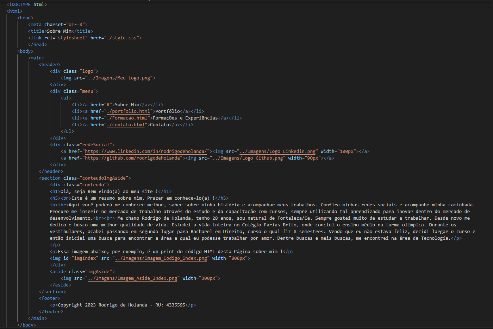

Olá, seja Bem vindo(a) ao meu site !
Este é um resumo sobre mim. Prazer em conhece-lo(a) !
Aqui você poderá me conhecer melhor, saber sobre minha história e acompanhar meus trabalhos. Confira minhas redes sociais e acompanhe minha caminhada. Procuro me inserir no mercado de trabalho através do estudo e da capacitação com cursos, sempre utilizando tal aprendizado para inovar dentro do mercado de desenvolvimento.
Me chamo Rodrigo de Holanda, tenho 28 anos, sou natural de Fortaleza/Ce. Sempre gostei muito de estudar e trabalhar. Desde novo me dedico e busco uma melhor qualidade de vida. Estudei a vida inteira no Colégio Farias Brito, onde conclui o ensino médio na turma olímpica. Durante os vestibulares, acabei passando em segundo lugar para Bacharel em Direito, curso o qual fiz 8 semestres. Vendo que eu não estava feliz, decidi largar o curso e então iniciei uma busca para encontrar a área a qual eu podesse trabalhar por amor. Dentre buscas e mais buscas, me encontrei na área de Tecnologia.
Essa imagem abaixo, por exemplo, é um print do código HTML desta Página sobre mim !
